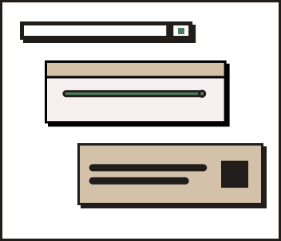
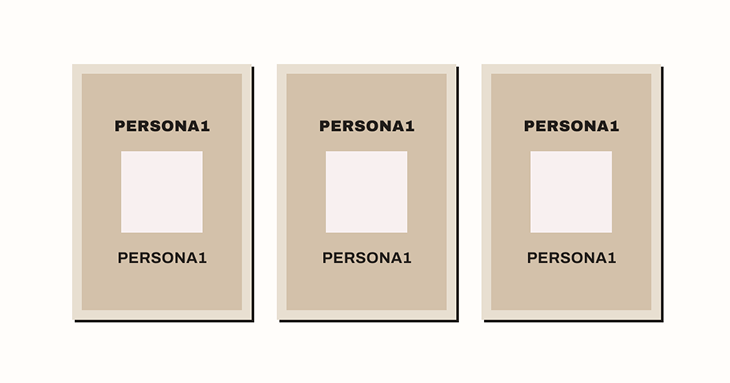
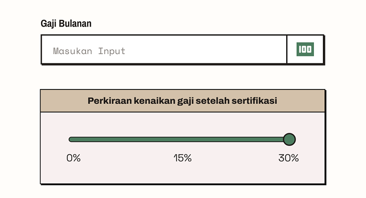
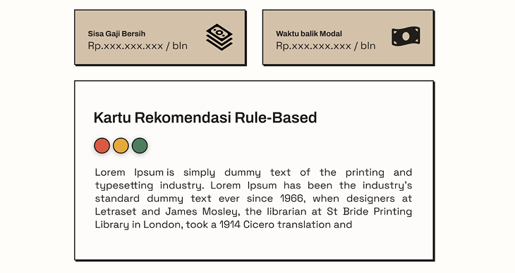

Website yang Menggambarkan
Keputusan Karirmu
Alat bantu pertimbangan, bukan penentu keputusan!
Dan yang paling banyak menganggur?
Bukan yang putus sekolah
tapi lulusan SMA (28%) dan S1 ke atas (13,9%).
Makanya, sebelum ambil keputusan karier, ada baiknya kamu tahu dulu gambarannya.
Simulator yang mengubah data gaji, pengeluaran, dan target tabunganmu jadi gambaran kelayakan sebuah karir. Bukan penentu keputusan, tapi alat bantu pertimbangan.

Alasan Kami
Keputusan karier itu berat, jangan cuma modal insting. Karsa hitungin semuanya pakai data yang kamu masukkan sendiri.
Nggak perlu bikin akun atau isi form panjang. Tinggal masukkan angka, hasilnya keluar dalam hitungan menit.
Gaji segitu, cukup nggak buat nabung 5 tahun lagi? Karsa kasih gambaran sebelum kamu beneran ambil keputusan.



Cerita Pengguna
Masih Bingung?